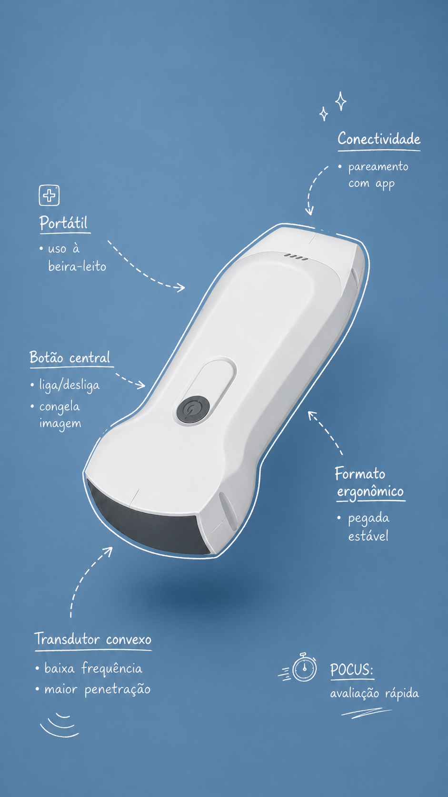
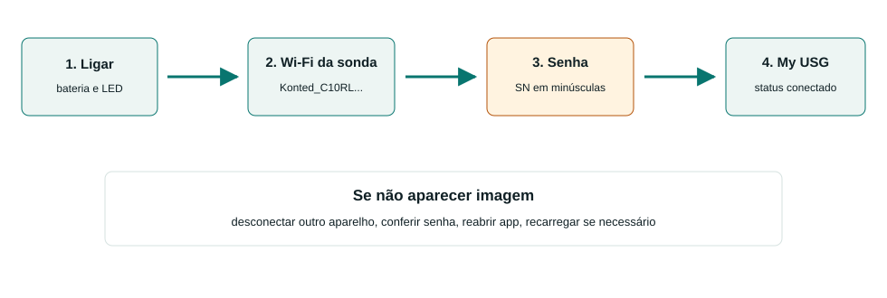
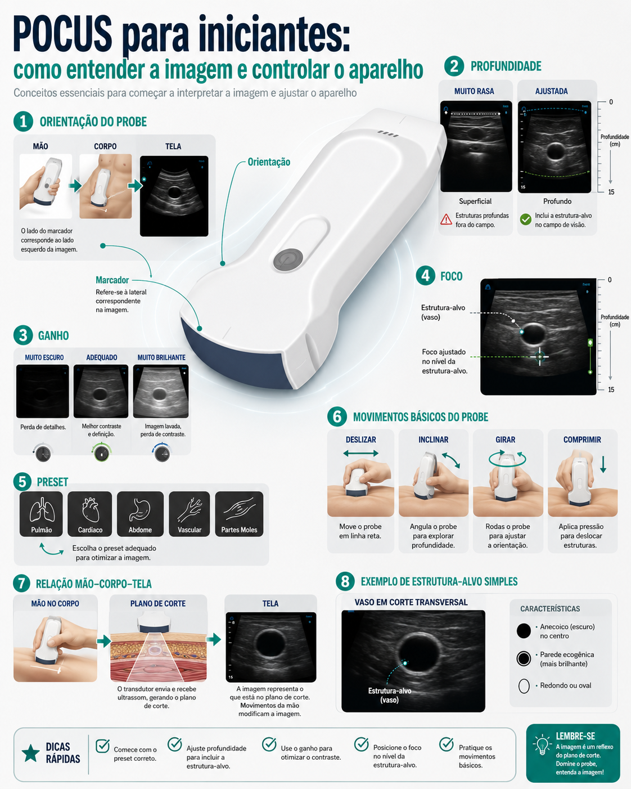

Treinamento de USG point-of-care
Material rápido para a equipe da UPA começar a usar o ultrassom point-of-care da unidade com segurança.

O objetivo inicial não é formar especialista em ultrassom. É fazer todo mundo conseguir:
- baixar o aplicativo correto;
- conectar o celular ou tablet ao aparelho;
- cuidar do equipamento antes e depois do uso;
- gerar uma imagem básica;
- reconhecer quando a imagem ou o exame estão limitados;
- chamar ajuda quando necessário.
O aparelho é para uso da equipe. Quem trabalha na UPA precisa saber conectar, cuidar e usar com responsabilidade.
Antes da aula
- Baixe o app My USG.
- Leve o celular ou tablet com bateria.
- Se puder, abra o app uma vez antes do treinamento.
- Não precisa decorar protocolos antes da primeira prática.
Regras simples de segurança
- POCUS responde uma pergunta clínica específica; não substitui avaliação completa.
- Não atrase reanimação ou conduta urgente para procurar imagem perfeita.
- Se a imagem estiver ruim ou o exame for limitado, diga isso claramente.
- Limpe e guarde o aparelho depois de usar.
Baixar o app
O aplicativo do aparelho é My USG.
Baixe antes do treinamento para evitar perda de tempo na hora da prática.
iPhone ou iPad
Use conexão Wi-Fi com a sonda.
Android
Android pode usar Wi-Fi e, quando houver cabo compatível, pode usar USB/Type-C.
Na hora da aula
- Abra o app somente depois de conectar no Wi-Fi da sonda.
- Se o app pedir permissões, permita acesso necessário para funcionar.
- Se não conseguir instalar, avise antes da prática para organizarmos outro dispositivo.
Conexão My USG
A conexão deve ser feita sempre na mesma ordem. O ponto mais importante dos manuais locais é: a senha do Wi-Fi da sonda é o número de série da sonda em letras minúsculas.

Primeiro acesso ao app
Se o My USG pedir login:
- toque em Administer;
- use a senha inicial 123456;
- se fizer sentido para o treinamento, ative Auto login;
- confirme e vá para a tela de exame.
Wi-Fi da sonda
- Ligue a sonda.
- Aguarde os indicadores de bateria/funcionamento.
- No celular/tablet, abra Wi-Fi.
- Selecione a rede da sonda.
- Digite a senha usando o SN em minúsculas, sem espaços.
- Abra o My USG.
- Confirme que a sonda aparece conectada.
- Coloque gel e gere imagem teste em modo B.
Se não funcionar
| Problema | Solução prática |
|---|---|
| Wi-Fi da sonda não aparece | ligar, carregar alguns minutos e aproximar o celular/tablet |
| Senha recusada | redigitar o SN todo em minúsculas, sem espaços |
| App pede senha | usar 123456 em Administer |
| Wi-Fi conecta, mas não sai imagem | fechar/abrir app, selecionar sonda e desconectar outro aparelho |
| Imagem trava | aproximar aparelho, reiniciar sonda/app e checar bateria |
| Cabo não funciona | no iPhone, prefira Wi-Fi; no Android, testar cabo/orientação compatível |
Cuidados e limpeza
Use sempre a mesma rotina. O objetivo é o aparelho continuar funcionando para toda a equipe.
Antes de usar
- Conferir carga da sonda.
- Conferir carga do celular/tablet.
- Conferir se o My USG abre.
- Conferir gel.
- Conferir material de limpeza.
- Fazer uma imagem teste antes de começar a aula ou atendimento.
Durante o uso
- Não puxar pelo cabo.
- Não deixar cair.
- Não apoiar a face da sonda em superfície suja.
- Não guardar com gel.
- Não usar se houver trinca, afundamento do transdutor ou porta danificada.
Depois de usar
- Remover o gel com pano macio ou papel apropriado.
- Limpar conforme produto aprovado pela instituição.
- Secar antes de guardar.
- Conferir se a sonda ficou íntegra.
- Deixar carregando ou guardar no local definido.
Quando pedir ajuda
- aparelho não liga mesmo após carregar;
- app trava repetidamente;
- imagem fica preta mesmo conectado;
- transdutor tem dano físico;
- houve contato com sangue/secreção e você não sabe o protocolo de desinfecção.
Controles de imagem
Não tente fazer uma imagem perfeita. Primeiro faça uma imagem útil para responder a pergunta clínica.

Ajuste básico
- Escolha a face correta: convexa para profundo, linear para superficial.
- Escolha preset próximo da região.
- Coloque gel suficiente.
- Ache a estrutura em modo B.
- Ajuste profundidade.
- Ajuste ganho.
- Ajuste foco se necessário.
- Congele e salve quando a imagem responder a pergunta.
Controles mais usados
| Controle | Para que serve |
|---|---|
| Preset | ponto de partida para órgão/estrutura |
| Gain/GN | clarear ou escurecer a imagem |
| Depth/D | aumentar ou reduzir profundidade |
| TGC | ajustar ganho por profundidade |
| Focus | colocar foco no alvo |
| Freeze/Live | congelar ou voltar ao vivo |
| Save image/video | registrar imagem ou clipe |
Erro comum
Se a imagem está ruim, não mexa só no ganho. Confira gel, contato, face correta, preset, profundidade e orientação.
O que vamos treinar
A primeira prática é operacional. A equipe deve sair sabendo usar o aparelho sem travar na conexão e sem danificar a sonda.
Sequência de prática
- Ligar a sonda.
- Conectar no Wi-Fi da sonda.
- Abrir o My USG.
- Entrar como Administer se necessário.
- Gerar imagem em modo B.
- Ajustar profundidade e ganho.
- Congelar a imagem.
- Salvar imagem ou vídeo curto.
- Limpar e guardar o aparelho.
Protocolos que serão demonstrados
| Situação | Pergunta POCUS |
|---|---|
| Trauma | há líquido livre ou pneumotórax provável? |
| Dispneia | há B-lines difusas, derrame, consolidação ou pneumotórax provável? |
| Retenção urinária/dor lombar | bexiga está cheia? há hidronefrose grosseira? |
| Pele e partes moles | há coleção drenável? |
| Acesso venoso | vejo vaso e ponta da agulha? |
Meta mínima de cada participante
Conectar, gerar uma imagem, ajustar profundidade/ganho, congelar, salvar e verbalizar uma limitação.
Armadilhas comuns
Conexão
| Armadilha | Solução |
|---|---|
| Confundir senha do app com senha Wi-Fi | app Administer usa 123456; Wi-Fi usa SN em minúsculas |
| Começar sem testar | ligar, conectar e gerar imagem antes da turma chegar |
| Usar cabo no iPhone como plano principal | usar Wi-Fi |
| Senha recusada | redigitar SN em minúsculas, sem espaços |
| Imagem preta | reiniciar app, reconectar Wi-Fi e checar bateria |
Imagem
| Armadilha | Solução |
|---|---|
| Alvo pequeno | reduzir profundidade |
| Imagem clara demais | reduzir ganho |
| Imagem escura | aumentar ganho, melhorar contato e usar mais gel |
| Estrutura profunda com linear | trocar para convexa |
| Estrutura superficial com convexa | trocar para linear |
| Direita/esquerda confusa | alinhar marcador da sonda com marcador da tela |
Clínica
- Derrame pericárdico não significa tamponamento automaticamente.
- Ausência de lung sliding não significa pneumotórax automaticamente.
- B-lines não significam sempre edema cardiogênico.
- IVC isolada não define volemia.
- FAST negativo não exclui lesão abdominal.
- Exame limitado deve ser registrado como limitado.
Procedimento
Se perdeu a ponta da agulha, pare. Reencontre a ponta antes de avançar.